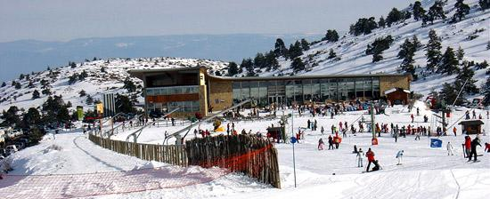
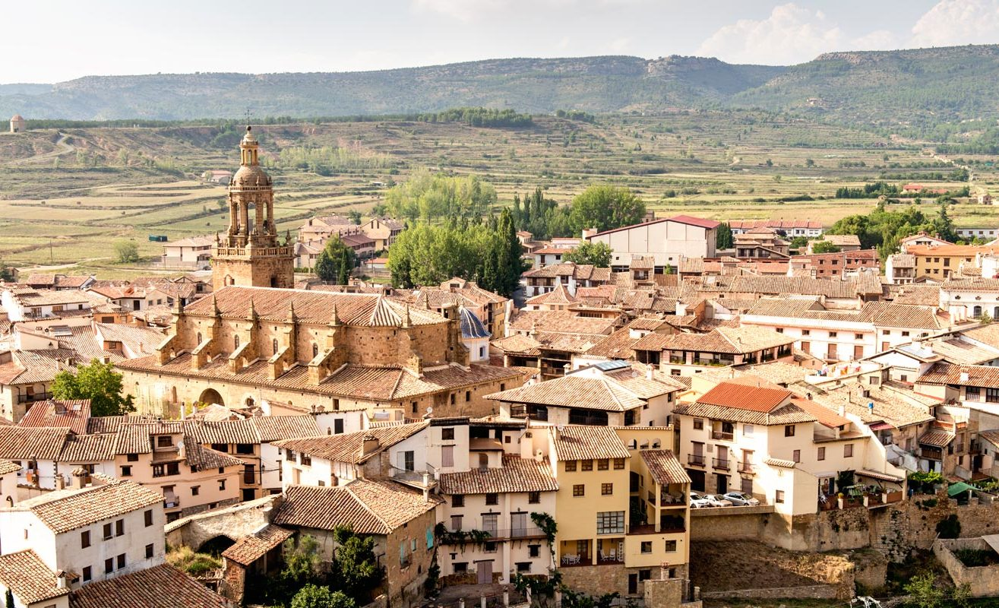

Javalambre
La estación de esquí de Javalambre, situada en la Sierra de Javalambre en Teruel, es un destino ideal para quienes buscan iniciarse en el esquí y el snowboard. Con alrededor de 15 kilómetros de pistas bien cuidadas y adaptadas a todos los niveles, esta estación destaca por su accesibilidad y servicios orientados a familias y principiantes. Javalambre cuenta con modernas instalaciones, zonas de trineo, escuela de esquí y alquiler de material, ofreciendo una experiencia cómoda y completa para disfrutar de la nieve en un entorno natural cercano y acogedor.
